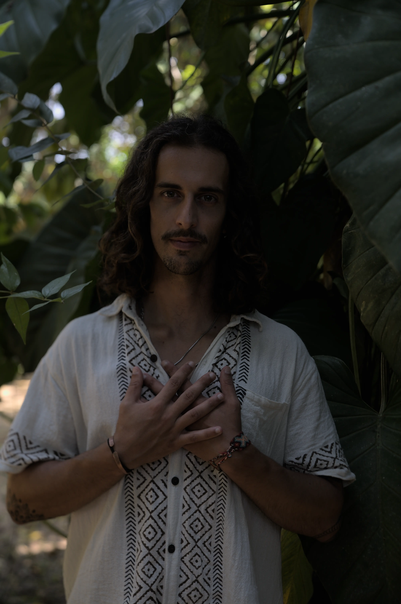
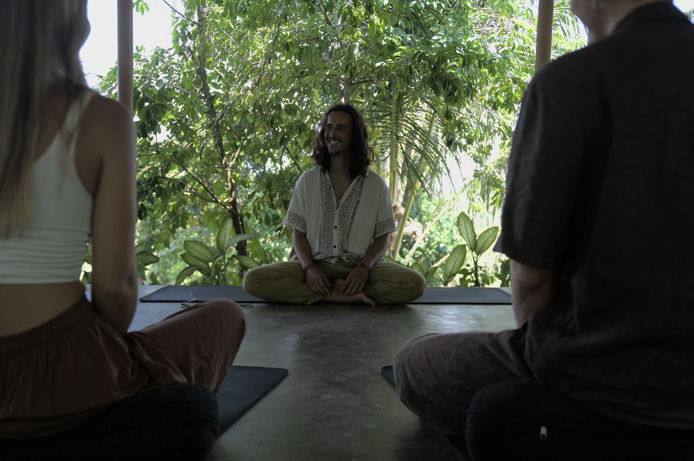
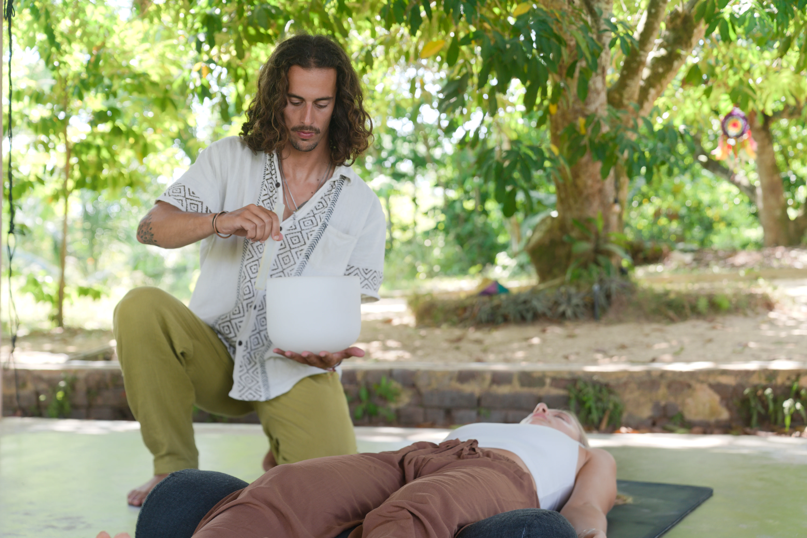
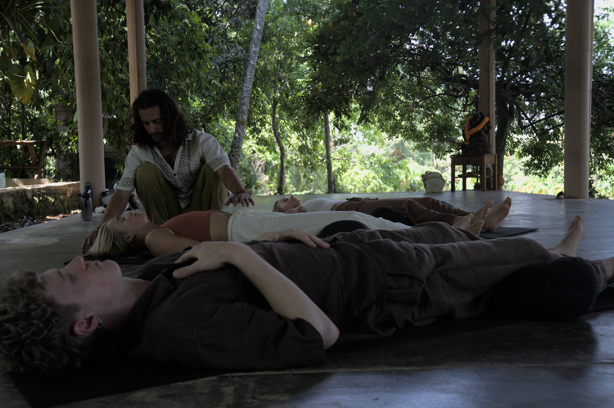
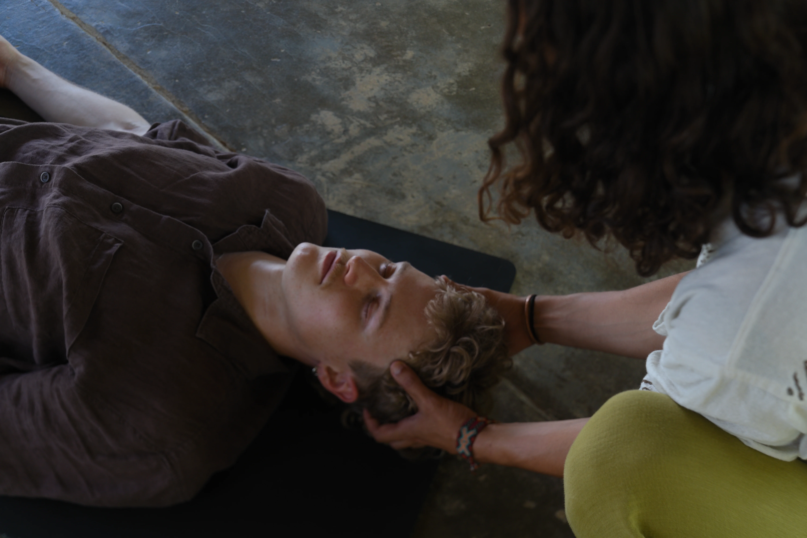
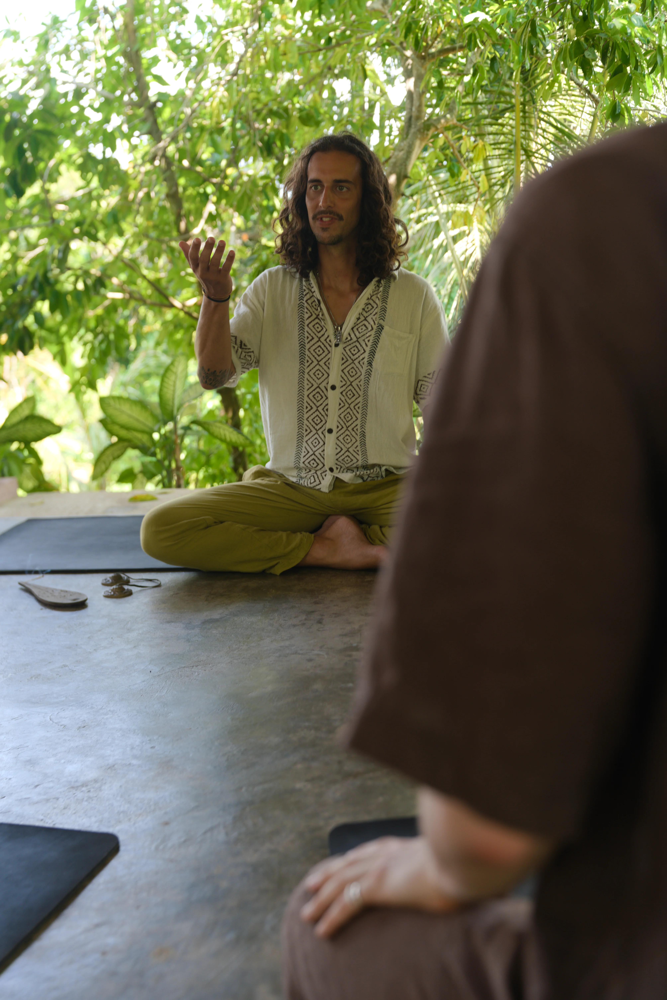

Sesiones para calmar la mente, soltar lo que pesa y volver a tu centro. Sin poses. Sin atajos.


Durante años viví desconectado de mi cuerpo y de mi energía. Ese camino de búsqueda me llevó al sonido, la presencia y la escucha profunda.
Hoy acompaño a personas que, como yo, están en un momento de cambio. Trabajo con sonido, respiración y activación energética para liberar tensión y reconectar con tu presencia.
Conoce más sobre mí →Elige la sesión según lo que necesitas ahora: calma, desbloqueo o liberación.

Relajación profunda, vibración sanadora, presencia. Gong, cuencos y armónicos para calmar el sistema nervioso.
Saber más →
Respiración consciente para liberar tensión, claridad mental y desbloqueo emocional.
Saber más →
Sonido, tacto consciente e instrumentos de alta vibración. Para desbloquear desde dentro hacia fuera.
Saber más →
Un espacio para bajar la máscara, hablar verdad y caminar acompañado. Presencia, escucha y tribu.
Saber más →Tenía días durmiendo mal y después de la sesión dormí muchísimo mejor.
AnaSalí con la mente en blanco, que últimamente me cuesta una barbaridad.
LauraFue como soltar una carga que llevaba tiempo cargando.
MaríaEra mi primera vez y tenía un día difícil. He descansado mejor que en semanas.
CarlosLa viví como una cura para el alma. Parar es necesario.
SofíaTenía días durmiendo mal y después de la sesión dormí muchísimo mejor.
AnaSalí con la mente en blanco, que últimamente me cuesta una barbaridad.
LauraFue como soltar una carga que llevaba tiempo cargando.
MaríaEra mi primera vez y tenía un día difícil. He descansado mejor que en semanas.
CarlosLa viví como una cura para el alma. Parar es necesario.
SofíaSesiones presenciales en Valencia y encuentros puntuales.
Si tienes una duda, quieres reservar o simplemente sientes que es el momento, escríbeme.
Escribir por WhatsApp